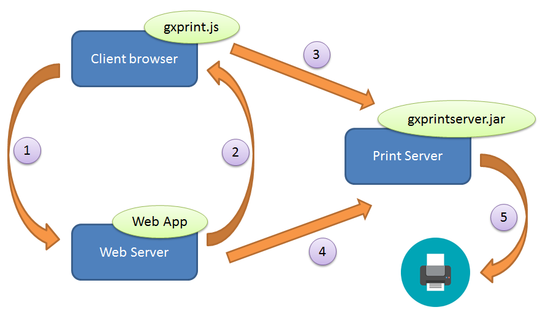
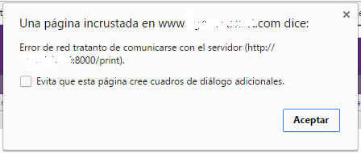

In late 2015 and for security reasons, browsers began to stop supporting JAVA applets.
In this context, those applications that provided direct printing on the client (browser) no longer worked because the feature was based on that technology.
The solution offered for these cases is to use the browser in "kiosk" mode, to prevent the print dialog from being displayed.
Using the browser in kiosk mode has certain restrictions:
To overcome the restrictions of the browsers kiosk mode, the applet used has been modified (printtingappletsigned.jar) by packaging it as an application or a service. In this way, it is possible to print on the client (browser) by including a JS (gxprint.js) in the application and installing the print service (gxprintserver.jar) on the computer connected to the printer.
You have two alternative solutions:
1) Defining a PDF Reports (this is supported since GeneXus 16 u2).
To achieve this:
2) Defining a report in text mode.
To achieve this:
The GeneXus application communicates with the print service via Ajax from the client machine's browser.
As for the implementation's details, it consists of two parts:
1 - The standard JavaScript gxprint.js (distributed by GeneXus) must be included in the application that will invoke the report. It can be done in each Web Panel or in the entire application by including it in the Master Page.
Event Start
Form.JScriptSrc.Add("gxprint.js")
Endevent
The gxprint.js JavaScript replaces the call to print via applet with an Ajax call to a print service.
Important Notes:
2 - The new .jar, called gxprintserver.jar (also distributed by GeneXus), is similar to the printtingappletsigned.jar applet. However, it has been turned into an executable .jar that implements a web http service.
The solution's architecture is as follows:

1. An HTTP request is made from the client to the web application in order to obtain the report (GeneXus Procedure).
2. The application returns the URL of the corresponding report to the client.
3. The client sends the URL of the corresponding report via Ajax to gxprintserver.jar.
4. Once the file path has been obtained, it is downloaded to the print server.
5. The report is printed on the configured printer.
- The print server (the machine where gxprintserver.jar is run) may be decoupled from the rest of the solution's components. That is to say, a Website that is visible to both the client browser and to the web server that hosts the application (so that steps 3 and 4 of the previous diagram are successfully completed).
- In the file gxprint.js, the URL where the gxprintserver.jar is located (by default http://localhost:8000/print) can be changed. This URL is interpreted from the machine that runs the browser.
The solution's sources can be found by extracting gxprintserver.jar as if it were a zip file. The package com.genexus.printing will contain: ParseINI.java, Printer.java and gxprintserver.java.
It can be directly run via Command Line with the following command:
java -jar gxprintserver.jar
Another option is to create a service. It can be created for win/unix using yajsw (http://yajsw.sourceforge.net/). Other options are available (this one has been tested).
The steps are simple; for a quick start, visit: http://yajsw.sourceforge.net/#mozTocId527639. There is also a screencast (Windows) available at https://www.youtube.com/watch?v=gX9tGInrIvg
Important note: The service must be run with a user that allows accessing the TCP port used. In addition, it must be able to print and preferably create files in the "temp" directory where the print log is generated.
To run gxprintserver.jar, Java JRE 1.7 or higer is required.
As from GeneXus XEv 3 Upgrade 10 and GeneXus 15 Upgrade 4.
When running the "java -jar gxprintserver.jar" command, the following error is displayed:
Exception in thread "main" java.lang.UnsupportedClassVersionError: com/genexus/p
rinting/gxprintserver : Unsupported major.minor version 51.0
at java.lang.ClassLoader.defineClass1(Native Method)
at java.lang.ClassLoader.defineClassCond(ClassLoader.java:631)
at java.lang.ClassLoader.defineClass(ClassLoader.java:615)
at java.security.SecureClassLoader.defineClass(SecureClassLoader.java:14
1)
at java.net.URLClassLoader.defineClass(URLClassLoader.java:283)
at java.net.URLClassLoader.access$000(URLClassLoader.java:58)
at java.net.URLClassLoader$1.run(URLClassLoader.java:197)
at java.security.AccessController.doPrivileged(Native Method)
at java.net.URLClassLoader.findClass(URLClassLoader.java:190)
at java.lang.ClassLoader.loadClass(ClassLoader.java:306)
at sun.misc.Launcher$AppClassLoader.loadClass(Launcher.java:301)
at java.lang.ClassLoader.loadClass(ClassLoader.java:247)
Could not find the main class: com.genexus.printing.gxprintserver. Program will
exit.
Cause: the Java version installed on the machine is not compatible with the .jar.
Solution: install jre 1.7 or higher.
When running in a secure environment (HTTPS), the following message is displayed after invoking the report:

Check that the following error is displayed in the browser's console:
Mixed Content: The page at 'https://somepage.com' was loaded over HTTPS, but requested an insecure XMLHttpRequest endpoint 'http://printserver:8000/print'. This request has been blocked; the content must be served over HTTPS.
gx.printing.makeCorsRequest @ gxprint.js?201732715194119:27
gxgral.js?97813:5773 gx.printing.makeCorsRequest Error calling at http://printserver:8000/print
Cause: the app is running in an HTTPS environment and invoking an unsafe URL in another domain. For security reasons, browsers don't allow cross origin requests.
Solution: currently under development.
Can I use the new mechanism if I'm using a previous GeneXus Upgrade?
Yes, files can be distributed separately if the user is not using the corresponding Upgrade.
The file gxprint.js must be placed in the corresponding directory of the web application, and the file gxprintserver.jar in a Windows directory that has runtime permissions to run the print service as explained earlier in the document.